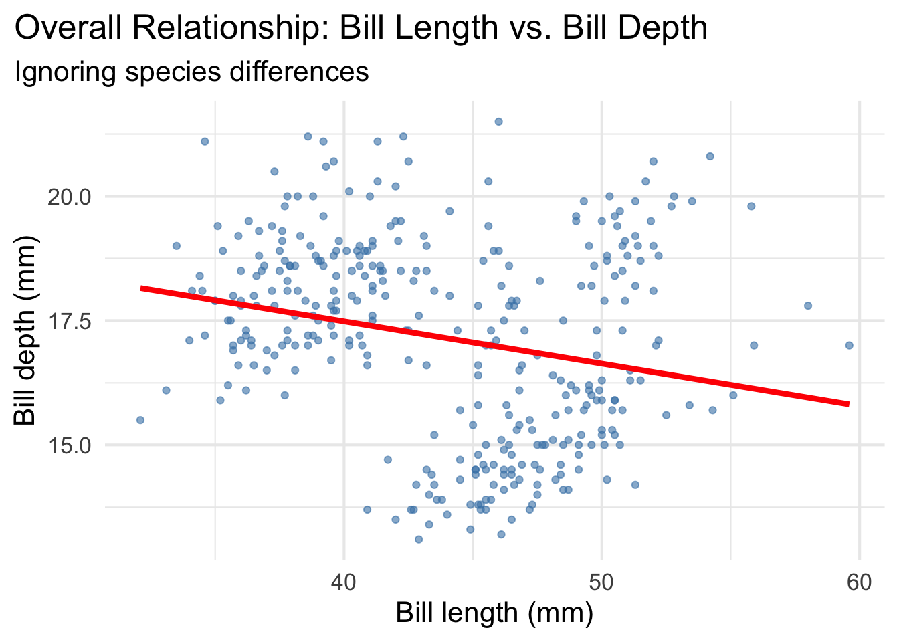
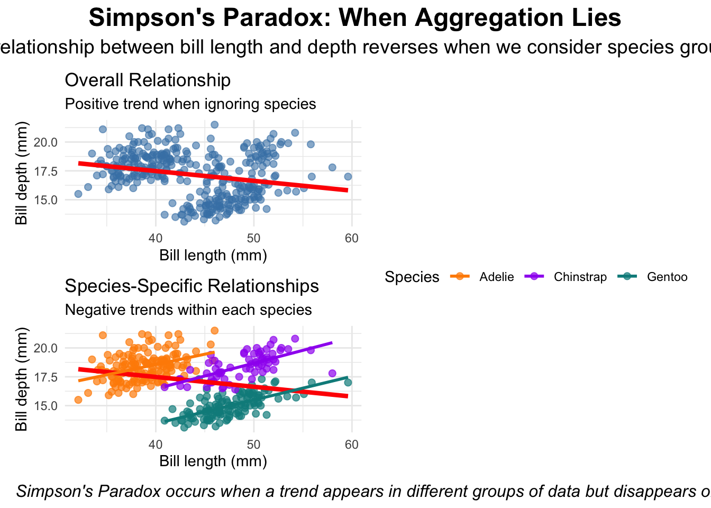

# Set CRAN mirror for package installation
options(repos = c(CRAN = "https://cran.rstudio.com/"))
# Install required packages if not already installed
if (!require(patchwork, quietly = TRUE)) {
install.packages("patchwork")
library(patchwork)
}
library(ggplot2)
library(palmerpenguins)
data(penguins)Understanding Simpson’s Paradox
A Data Visualization Journey with Penguin Bill Dimensions
Introduction to Simpson’s Paradox
Simpson’s Paradox is one of the most fascinating and dangerous phenomena in data analysis. It occurs when a trend appears in different groups of data but disappears or reverses when these groups are combined. This paradox can lead to completely wrong conclusions if we don’t look beyond surface-level statistics.
The classic example comes from UC Berkeley’s 1973 graduate admissions data, where women appeared to be discriminated against in the overall admission rates, but when examined by department, women actually had equal or higher admission rates than men.
In this tutorial, we’ll explore Simpson’s Paradox using the beloved Palmer Station penguin dataset, examining the relationship between bill length and bill depth across different penguin species.
The Data Story: Penguin Bill Dimensions
Let’s start by examining our data and building up to the paradox step by step.
A. The Overall Relationship
plot1 <- ggplot(data = penguins,
aes(x = bill_length_mm,
y = bill_depth_mm)) +
theme_minimal(16) +
geom_point(alpha = 0.6, color = "steelblue") +
labs(title = "Overall Relationship: Bill Length vs. Bill Depth",
subtitle = "Ignoring species differences",
x = "Bill length (mm)",
y = "Bill depth (mm)") +
theme(plot.title.position = "plot",
plot.caption = element_text(hjust = 0, face= "italic"),
plot.caption.position = "plot") +
geom_smooth(method = "lm", se = FALSE, color = "red", linewidth = 1.5)
plot1
At first glance, we see a positive relationship between bill length and bill depth. The red trendline suggests that longer bills tend to be deeper. This seems straightforward, but let’s dig deeper…
C. Side-by-Side Comparison
# Create a simple, clean side-by-side comparison
# Plot 1: Overall relationship
plot1_simple <- ggplot(data = penguins,
aes(x = bill_length_mm,
y = bill_depth_mm)) +
theme_minimal() +
geom_point(alpha = 0.6, color = "steelblue", size = 2) +
labs(title = "Overall Relationship",
subtitle = "Positive trend when ignoring species",
x = "Bill length (mm)",
y = "Bill depth (mm)") +
geom_smooth(method = "lm", se = FALSE, color = "red", linewidth = 1.5)
# Plot 2: Species-specific relationships
plot2_simple <- ggplot(data = penguins,
aes(x = bill_length_mm,
y = bill_depth_mm,
color = species)) +
theme_minimal() +
geom_point(alpha = 0.7, size = 2) +
scale_color_manual(values = c("darkorange","purple","cyan4"),
name = "Species") +
labs(title = "Species-Specific Relationships",
subtitle = "Negative trends within each species",
x = "Bill length (mm)",
y = "Bill depth (mm)") +
theme(legend.position = "bottom") +
# Overall trend (ignoring species)
geom_smooth(method = "lm", se = FALSE, color = "red",
linewidth = 1.5, alpha = 0.8) +
# Species-specific trends
geom_smooth(method = "lm", se = FALSE, linewidth = 1)
# Create the comparison using patchwork
comparison_plot <- plot1_simple / plot2_simple +
plot_layout(guides = "collect") +
plot_annotation(
title = "Simpson's Paradox: When Aggregation Lies",
subtitle = "The relationship between bill length and depth reverses when we consider species grouping",
caption = "Simpson's Paradox occurs when a trend appears in different groups of data but disappears or reverses when these groups are combined. Here, the overall positive relationship (top) masks the negative relationships within each species (bottom).",
theme = theme(
plot.title = element_text(size = 18, face = "bold", hjust = 0.5),
plot.subtitle = element_text(size = 14, hjust = 0.5),
plot.caption = element_text(size = 12, hjust = 0, face = "italic")
)
)
comparison_plot
The Power of Side-by-Side Visualization! 🎯
This comparison makes Simpson’s Paradox crystal clear: - Top plot: Shows the overall positive relationship between bill length and depth - Bottom plot: Reveals the negative relationships within each species - The paradox: The same data tells two completely different stories depending on whether we consider the species grouping variable
Key Takeaways: Lessons from Simpson’s Paradox
The Power of Visualization
- Always visualize your data before drawing conclusions from statistical models
- A single trendline can be dangerously misleading when it masks underlying group differences
- P-values are not the answer - statistical significance doesn’t guarantee the relationship is meaningful or correctly interpreted
Simpson’s Paradox Dangers
- Aggregated data can reverse relationships - what appears to be a positive correlation overall might be negative within each group
- Business implications: Making decisions based on aggregate trends without considering subgroups can lead to costly mistakes
- The “lurking variable” problem: Always ask “What am I missing?” when relationships seem counterintuitive
Real-World Examples
- UC Berkeley admissions (1973): Overall admission rates suggested gender bias against women, but within each department, women had equal or higher admission rates
- Baseball batting averages: A player can have a higher batting average than another in both halves of a season, yet a lower overall average
- Medical studies: A treatment can appear harmful overall but beneficial within each age group
- Marketing campaigns: A campaign might seem ineffective overall but highly successful within specific customer segments
Best Practices for Data Analysis
- Stratify your analysis by relevant grouping variables (demographics, categories, time periods)
- Look for confounding variables that might explain apparent relationships
- Use multiple visualization approaches (overall vs. faceted plots, side-by-side comparisons)
- Question your assumptions - if a relationship seems too good (or bad) to be true, it might be!
Conclusion
Simpson’s Paradox teaches us that context matters. The penguin data shows us that what appears to be a simple positive relationship between bill length and depth is actually masking a more complex reality where the relationship is negative within each species. This paradox reminds us to always dig deeper, consider confounding variables, and never trust aggregate statistics without examining the underlying groups.
Remember: The truth is in the details, not in the summary statistics.